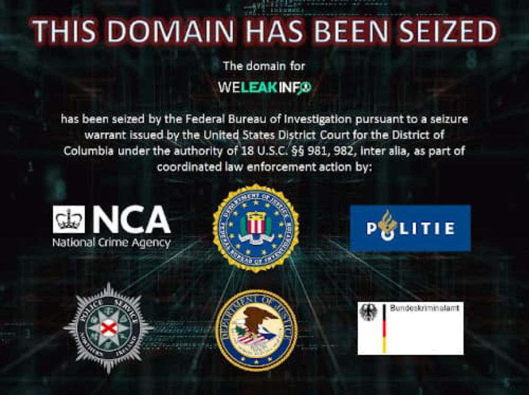
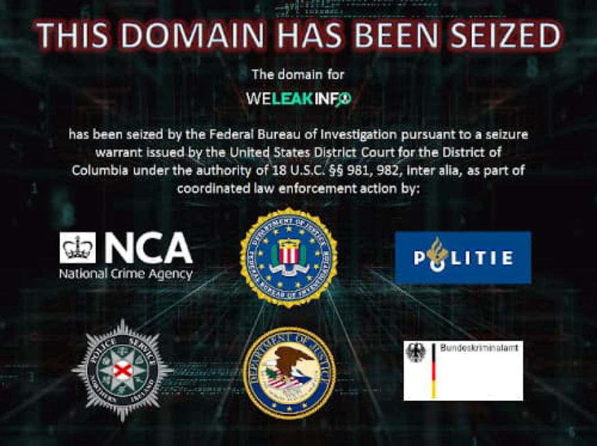

FBI Seized WeLeakInfo.com
The FBI and the Department of Justice seized the domain name weleakinfo.com, according to a recent press release. Prior to the seizure, weleakinfo.com was used as a platform for the distribution of stolen personal information. The site had claimed to have more than 12 billion records indexed.
We Leak Info branded itself as a legitimate service designed to “identify and eliminate invisible threats to your organization” as well as to “better protect your users and clients with access to better data,” according to the information previously available on the site’s homepage. The homepage now, though, displays a seizure banner not unlike those displayed on any number of seized darkweb marketplaces.
The domain for WeLeakInfo has been seized by the Federal Bureau of Investigation pursuant to a seizure warrant issued by the United States Diitrict Court for the District of Columbia under the authority of 18 U.S. Code § 981, 982, inter alia, as part of coordinated law enforcement action by [a selection of logos representing the law enforcement agencies involved in the investigation].
According to the press release, the agencies involved include the FBI, the Department of Justice’s Computer Crime and Intellectual Property Section, the United Kingdom’s National Crime Agency, the Netherlands National Police Corps, the German Bundeskriminalamt, and the Police Service of Northern Ireland.[img=]The Search Engine[/img]
WeLeakInfo offered the following features as a part of the various plans available to customers. Different subscription packages allowed users to access the site’s database of stolen data for up to three months (with the most expensive plan). The cheapest offering available, a $2 option, allowed users to make searches for up to an hour. The $7 plan came with a week of access; the $25 plan came with a month of access; and the $70 plan came with three months access.[img=][/img]
Some of the advertised features:[list]*Fetch up to 10,000 results per page in a fraction of a millisecond. Wildcard and Regex doesn’t slow us down!*Gain access to an ever growing collection of over 10,000 data breaches. We constantly acquire and import new data every other week.*Fill in unknown parts of your query with Wildcard and Regex. Specify characters, length and more! Find all variations within seconds.[/list]
The site also advertised a public API with some of the following features:[list]*See which data breaches your information is found in for free. Conduct research on data breaches.*Search anything from usernames to IP ranges with Wildcard and Regex. Automate queries within your organization.*Get access to one of the most popular hash decryption service. Decrypt all your hashes within seconds.[/list]
People with information concerning weleakinfo.com or its owners and operators were asked to file a complaint with the FBI’s Internet Crime Complaint Center (IC3). No arrests have been announced in connection with the case. The person operating the site’s Twitter account has deleted several Tweets since the domain seizure, indicating that at least one person avoided arrest.
We Leak Info branded itself as a legitimate service designed to “identify and eliminate invisible threats to your organization” as well as to “better protect your users and clients with access to better data,” according to the information previously available on the site’s homepage. The homepage now, though, displays a seizure banner not unlike those displayed on any number of seized darkweb marketplaces.
The Seizure Banner
The domain for WeLeakInfo has been seized by the Federal Bureau of Investigation pursuant to a seizure warrant issued by the United States Diitrict Court for the District of Columbia under the authority of 18 U.S. Code § 981, 982, inter alia, as part of coordinated law enforcement action by [a selection of logos representing the law enforcement agencies involved in the investigation].
According to the press release, the agencies involved include the FBI, the Department of Justice’s Computer Crime and Intellectual Property Section, the United Kingdom’s National Crime Agency, the Netherlands National Police Corps, the German Bundeskriminalamt, and the Police Service of Northern Ireland.[img=]The Search Engine[/img]
WeLeakInfo offered the following features as a part of the various plans available to customers. Different subscription packages allowed users to access the site’s database of stolen data for up to three months (with the most expensive plan). The cheapest offering available, a $2 option, allowed users to make searches for up to an hour. The $7 plan came with a week of access; the $25 plan came with a month of access; and the $70 plan came with three months access.[img=][/img]
Some of the advertised features:[list]*Fetch up to 10,000 results per page in a fraction of a millisecond. Wildcard and Regex doesn’t slow us down!*Gain access to an ever growing collection of over 10,000 data breaches. We constantly acquire and import new data every other week.*Fill in unknown parts of your query with Wildcard and Regex. Specify characters, length and more! Find all variations within seconds.[/list]
The site also advertised a public API with some of the following features:[list]*See which data breaches your information is found in for free. Conduct research on data breaches.*Search anything from usernames to IP ranges with Wildcard and Regex. Automate queries within your organization.*Get access to one of the most popular hash decryption service. Decrypt all your hashes within seconds.[/list]
People with information concerning weleakinfo.com or its owners and operators were asked to file a complaint with the FBI’s Internet Crime Complaint Center (IC3). No arrests have been announced in connection with the case. The person operating the site’s Twitter account has deleted several Tweets since the domain seizure, indicating that at least one person avoided arrest.